CONSUMER LEGAL AI
微律
让复杂的法律问题，变成清晰的下一步行动。
面向中国大陆普通用户的 AI 法律问题初筛与行动指导概念，重点处理事实确认、信息不确定性、服务分流和资料授权。
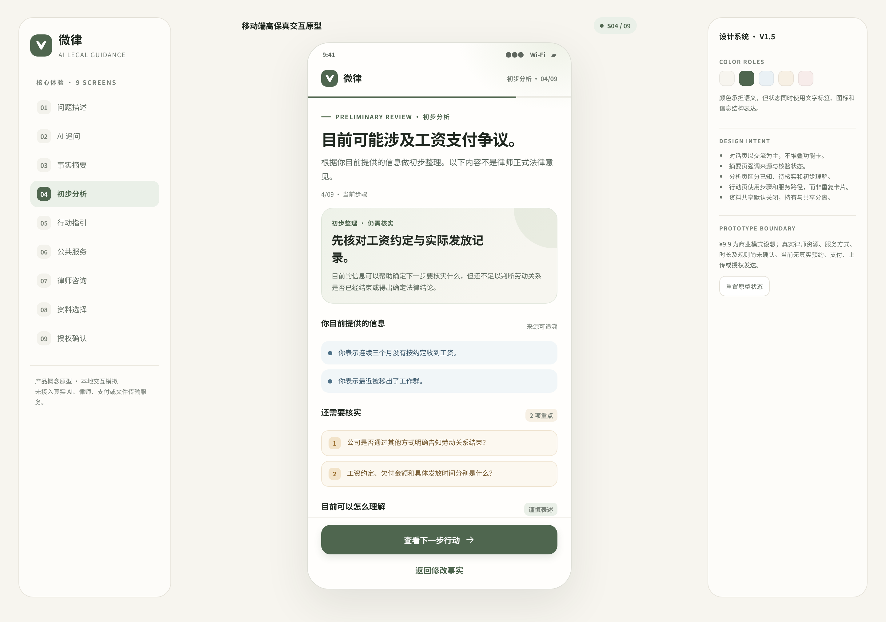
问题不只是用户不知道法律，而是不知道哪些信息重要。
《微律》是一项面向中国大陆普通用户的 AI 法律问题初筛与行动指导产品概念。它尝试把不完整的生活叙述整理为可检查的事实、谨慎的初步分析和可自主选择的服务路径。
贯穿案例的情境是：用户表示连续三个月未按约定收到工资，最近被移出工作群。公司是否正式告知劳动关系结束仍未知；不能因为被移出工作群就认定劳动关系已经终止。该情境是设计案例，不代表真实案件研究结论。
设计问题：如何把一段不完整的生活叙述，转化为用户能够检查的事实摘要、谨慎的初步分析和清晰的行动路径，同时守住 AI 与专业法律服务之间的责任边界？
九个页面组成一条用户可控的服务流程。
AI 负责整理与说明边界，用户决定是否继续、是否寻求公共法律服务或了解律师咨询。每一步都保留检查、修改、跳过或退出的路径。
自由表达，不要求用户先懂法律术语。
逐题确认关键事实，保留不知道与跳过。
用户核对和修改；确认只代表表达准确，不等于事实已被第三方核实。
区分已知信息、待核实事项和法律来源状态。
提供免费、可执行的下一步。
作为独立路径呈现，不以付费为前置。
先了解服务；真实服务未落实时不可预约或支付。
用户主动选择要共享的资料，默认不勾选。
接收方、用途和范围未核验时，授权保持禁用。
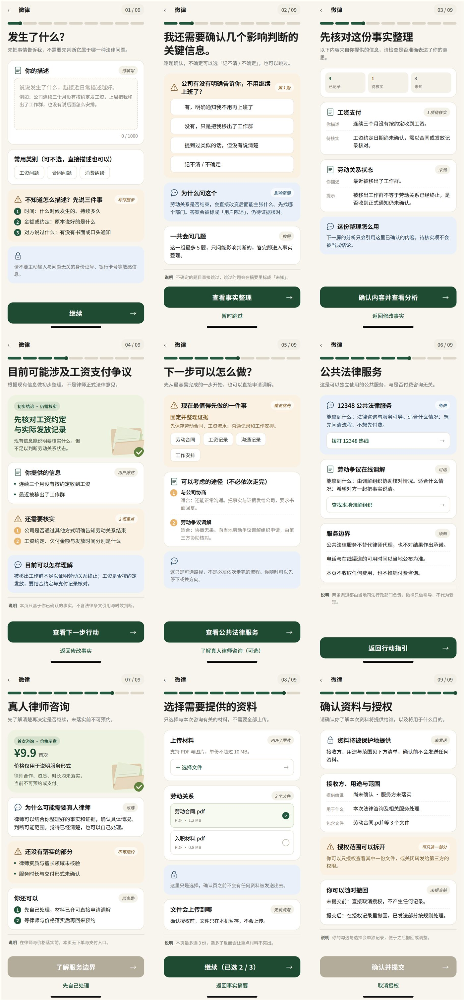
五个设计取舍，围绕表达、事实与用户控制权展开。
界面决策围绕具体风险展开：不让用户因为表达困难而退出，不让 AI 把推断包装成事实，也不让服务转接变成强制付费或默认共享。
问题 / 考量先用普通语言承接用户叙述，再逐个询问关键事实。
设计回应选择题降低表达门槛，同时保留“不确定”和跳过。
问题 / 考量用户可以逐项修改摘要；确认不等于第三方核实。
设计回应每条信息显示来源和待核实状态。
问题 / 考量不显示胜诉率、赔偿金额预测或未经核验的法条。
设计回应把用户提供的信息、待核实事项、初步理解和法律来源状态分开。
问题 / 考量自主处理、公共法律服务和律师咨询保持独立选择。
设计回应免费行动指引不被付费墙阻断。
问题 / 考量用户持有某类材料不代表同意共享。
设计回应默认未勾选；预览不等于授权；接收方未核验时按钮禁用。

不同信息任务，使用不同的信息形态。
对话页强调表达；事实摘要强调来源和核验状态；分析页强调信息分层；行动页采用步骤与服务分流；资料页采用明确的选择列表。避免九页都使用重复卡片。
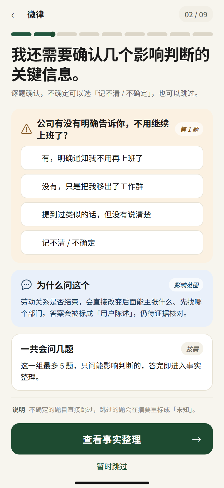
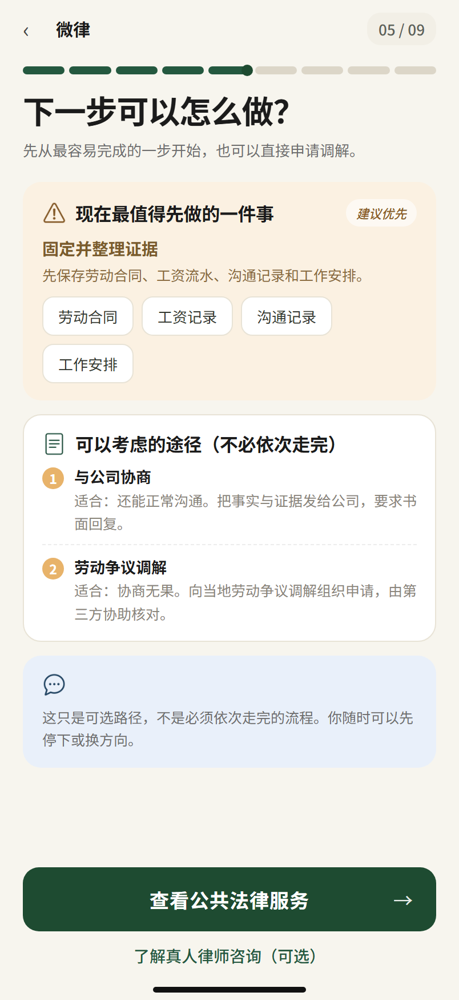
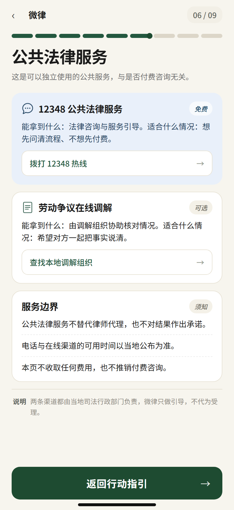

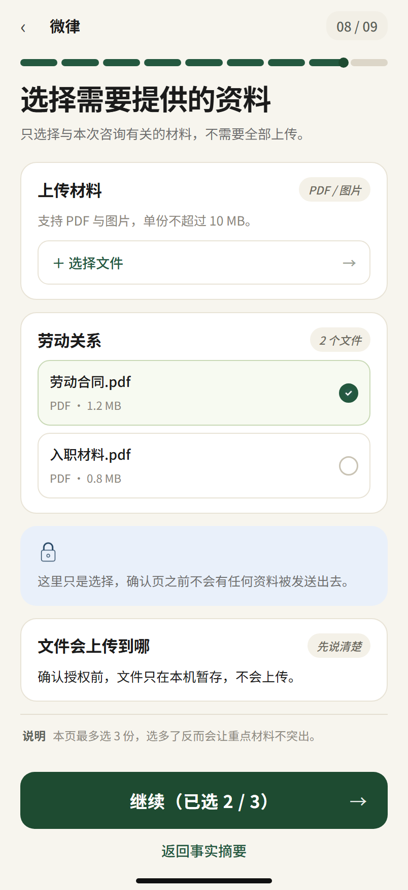
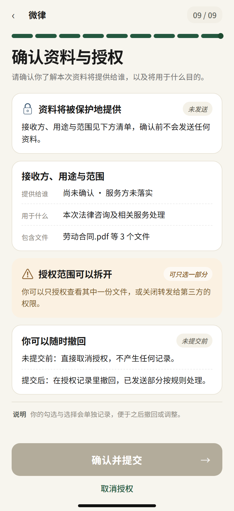
九页只画了理想路径，26 帧才把状态打开。
法律初筛真正的风险大量藏在异常态里：用户信息冲突、资料缺失、文件上传失败、接收方身份未核验。于是把九页流程拆成 9 个场景 × 3–5 个状态，共 26 帧；随后按视觉验收反馈，对 26 帧的顶部节奏做了一次统一整改。
第一轮九页原型呈现的是每页的“理想一遍过”。扩展成 26 帧后，同一套组件要在「没有内容可显示」「正在加载」「用户输入到一半」「两份材料互相矛盾」「接收方没核验」这些情况下继续成立——这些状态恰恰是用户最不信任产品的时刻。
V1.8 的整改起因是视觉验收反馈“顶部留白过大、标题到首区块节奏松散”。定位后发现不是间距参数的问题：每帧 Header 里的标题行与进度条行被固定写成 100px 高，而实际内容只有 25px 和 12px，两处合计约 160px 死区把 H1 推到 y=256。
- 只改高度，不动视觉资产：标题行 100 → 25，进度条行由固定高改为贴合内容的自动高；颜色、字号、间距和插画未改。
- 整改后 26 帧共用同一套顶部节奏：标题行 → 进度条 → H1 → 副标题 → 首区块，层级间距 12 / 20 / 20。
- 仍未处理：正文区沿用填充高度，收紧出的 163px 转移到正文底部留白；1200×760 封面页与设计系统空页不在本次范围内。
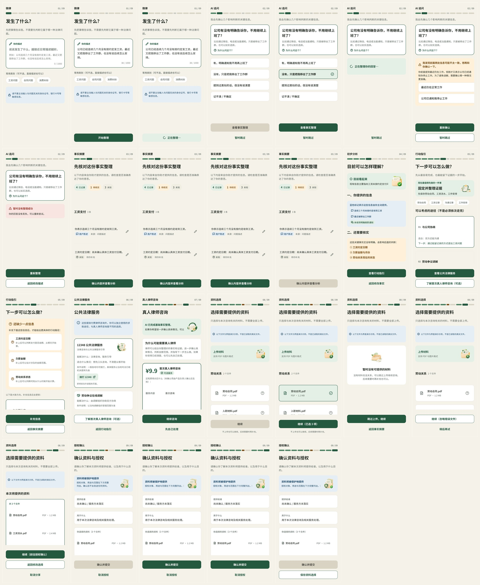
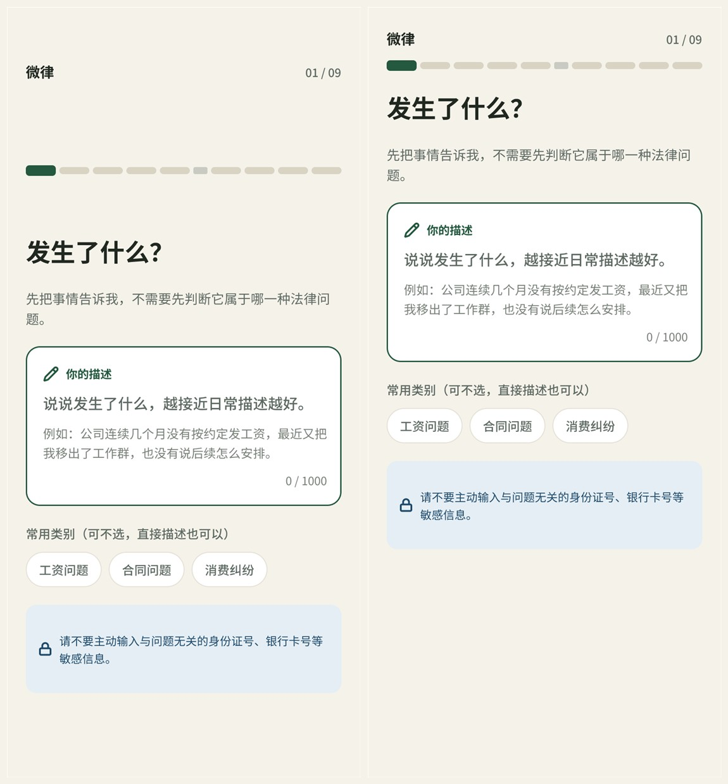
把 26 帧重做成一套能撑住密度的版式语言。
参考稿只给了一屏（S04 初步分析）。真正要解决的是“每屏都成立”：统一成主结论块 + 语义色卡片组 + 状态标签 + 贴底主操作，再把每屏内容排到接近操作区。
原版的问题不是不好看，而是密度不匀：信息少的屏（S02 追问、S08 上传失败）内容只占半屏，操作区上方空出 100–300px，视线在空带里掉下去。V2.0 先做的是把这类屏的“能说什么”补足，再把间距收紧。
反推出的规则：主结论块每屏至多一个，只写「已经能说到哪一步」；语义色只用于四个语义（用户陈述、待核实、解释、法律依据）；相邻区块间距 12、页面左右 20；CTA 贴底，内容排到 CTA 上方 0–78px。
- 排版用无头浏览器逐屏量「内容底部到 CTA 的空隙」与「溢出」，不是目测：26 屏溢出全部为 0，余量 0–78px，原版是 100–300px。
- 每屏保留一条「说明」，明写这页不做什么：不判断金额与时效、未授权不发送、接收方未核验时按钮禁用。
- 6 个单色图标与 1 张文件夹插画全部单独生成位图（透明底 192px / 400px），没有用矢量拼图标，避免 26 屏各画一版导致风格漂移。
- 全部 26 屏放进一个 HTML 单页展示，并导出 2x（804×1748）供 Figma 与作品集使用；未把 26 帧在 Figma 内改成组件化重排，页面归档待确认。
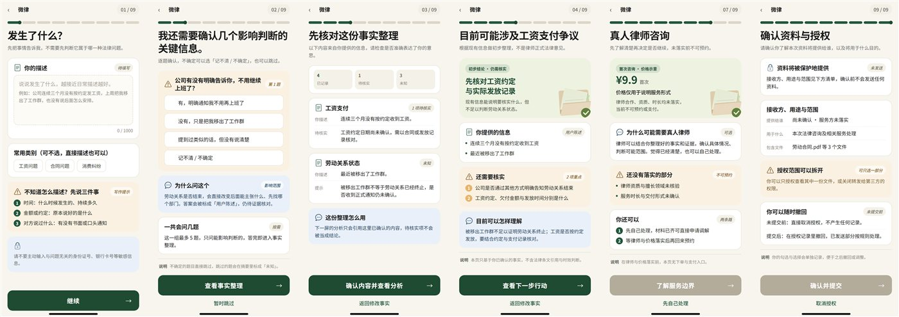

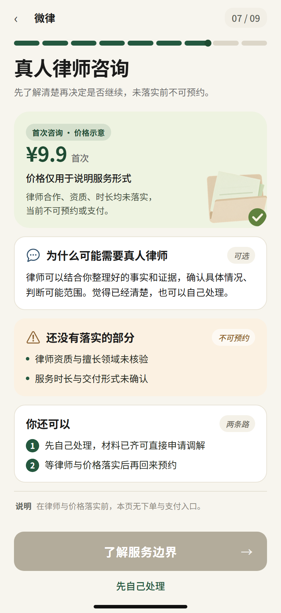
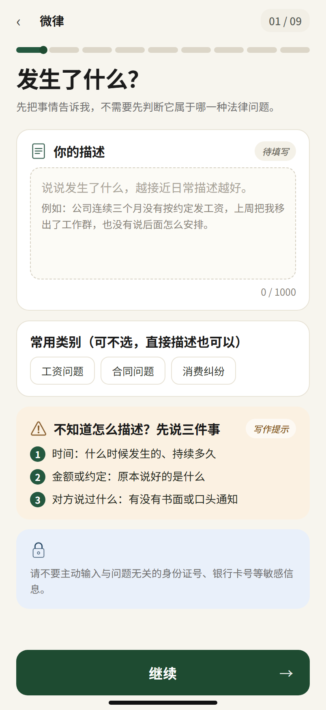
让不确定性和用户控制权成为界面的一部分。
语义色只作为辅助：蓝色表示用户陈述，琥珀色表示待核实，绿色表示行动或确认。所有状态同时使用文字标签和结构表达，不能只靠颜色传递。
- 被移出工作群不等于劳动关系已经终止；工作状态保持未知，继续追问是否收到正式通知。
- 用户陈述、用户确认、证据材料和 AI 推断不能混成同一种事实。
- 用户表示持有劳动合同或工资流水，不会自动勾选为共享资料。
- 预览资料不等于授权；接收方、用途和范围未核验时，授权按钮禁用。
- 公共法律服务保持独立路径；律师咨询真实服务未落实时不开放预约和支付。
技术检查已经完成，真实用户和法律验证仍待开展。
当前自动化检查证明指定浏览器环境下的原型流程和状态可以运行，不代表真实用户已经理解界面，也不代表法律服务能力已经验证。
- 已验证：320 / 360 / 375 / 393 / 430 CSS px 无横向溢出；主要按钮高度 48 CSS px；页面运行时错误 0。
- 待开展：6–8 名目标用户访谈与可用性测试；法律专业人士复核；真实 iOS / Android 设备和读屏测试。
- 未实现：真实 AI、法律数据库、地区公共服务目录、律师合作、支付、文件上传、存储和授权发送。
- 待补充：项目个人职责与项目周期。
 维序 WEISU · 让每一次拣货差异，都有据可查、有人负责、有路可走。
维序 WEISU · 让每一次拣货差异，都有据可查、有人负责、有路可走。 智审 · 让合同审查有据可查。
智审 · 让合同审查有据可查。